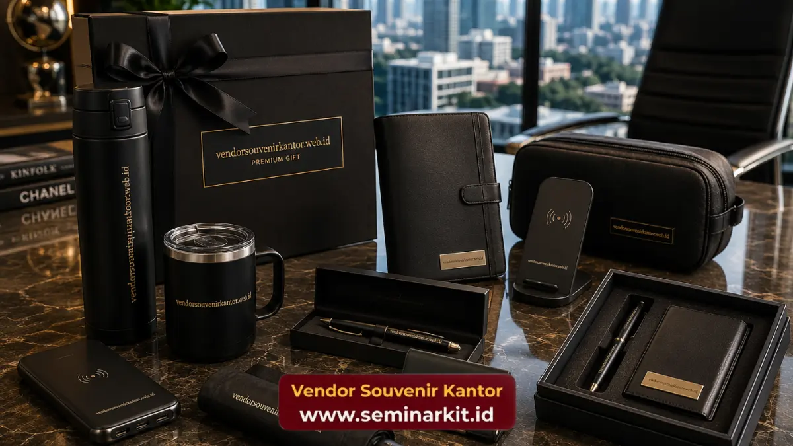

Harga souvenir kantor pada 2026 umumnya berkisar Rp15.000 hingga Rp500.000 per item, tergantung bahan, teknik cetak logo, dan jumlah minimum pemesanan yang diajukan.
- Souvenir kantor kategori ekonomis (alat tulis, gantungan kunci) dibanderol sekitar Rp15.000-Rp50.000 per item.
- Kategori menengah (tumbler, powerbank, notebook custom) berada di kisaran Rp50.000-Rp200.000 per item.
- Kategori premium (tas eksekutif, produk kulit, plakat) bisa mencapai Rp200.000-Rp500.000 per item atau lebih.
- Harga final selalu dipengaruhi oleh jumlah pesanan, teknik cetak logo, dan lead time produksi.
- Vendor souvenir kantor terpercaya dapat membantu menyusun anggaran sesuai kebutuhan acara maupun kebutuhan rutin instansi.
Berapa Kisaran Harga Souvenir Kantor per Item?
Kisaran harga souvenir kantor per item pada 2026 terbagi dalam tiga kelas utama, yaitu ekonomis, menengah, dan premium, dengan rentang Rp15.000 hingga di atas Rp500.000.
Kelas ekonomis biasanya dipilih untuk kebutuhan acara berskala besar seperti seminar, pelatihan, atau pembagian merchandise ke ratusan karyawan.
Produk pada kategori ini meliputi pulpen custom, gantungan kunci akrilik, dan notes kecil dengan cetak logo satu warna.
Kelas menengah mencakup produk yang lebih tahan lama dan sering menjadi pilihan utama untuk gift korporat kepada klien atau mitra bisnis.
Tumbler stainless, powerbank custom logo, dan buku agenda kulit sintetis termasuk dalam rentang harga ini.
Kelas premium biasanya dipesan untuk penghargaan karyawan berprestasi, cinderamata untuk tamu VIP, atau plakat penghargaan resmi perusahaan.
Bahan yang digunakan lebih berkualitas, misalnya kulit asli, kayu solid, atau logam finishing khusus.
Apa Saja Faktor yang Mempengaruhi Harga Souvenir Kantor?
Harga souvenir kantor ditentukan oleh kombinasi bahan baku, teknik cetak logo, jumlah pesanan, dan tingkat kerumitan desain yang diminta oleh instansi pemesan.
Bahan baku menjadi faktor paling dominan. Produk berbahan plastik atau akrilik jelas lebih murah dibandingkan produk berbahan kayu solid, kulit asli, atau logam premium.
Semakin tahan lama dan semakin premium kesan yang ingin ditampilkan, semakin tinggi pula biayanya.
Teknik cetak logo turut memengaruhi biaya produksi. Sablon dan cetak digital umumnya lebih ekonomis, sementara teknik engraving laser, bordir, atau emboss membutuhkan proses lebih rumit sehingga biayanya lebih tinggi.
Jumlah pesanan juga berperan besar dalam menentukan harga per unit. Semakin banyak jumlah pesanan, umumnya harga per item semakin turun karena biaya produksi dapat dibagi rata pada skala yang lebih besar.
Berdasarkan pengamatan pelaku industri produk promosi korporat sepanjang 2025, sebagian besar instansi pemerintah dan perusahaan swasta memilih souvenir kantor pada kisaran Rp50.000 hingga Rp150.000 per item untuk kebutuhan acara internal maupun eksternal tahunan.

Bagaimana Cara Menghitung Anggaran Souvenir Kantor untuk Acara Perusahaan?
Menghitung anggaran souvenir kantor dapat dilakukan dengan mengalikan estimasi harga per item pada kategori yang dipilih dengan jumlah peserta atau penerima souvenir yang direncanakan.
Langkah pertama adalah menentukan tujuan pemberian souvenir, apakah untuk internal karyawan, klien, atau tamu acara resmi. Tujuan ini akan menentukan kelas harga yang paling sesuai.
Langkah kedua adalah menetapkan jumlah penerima secara pasti agar estimasi anggaran lebih akurat dan tidak terjadi kekurangan maupun kelebihan stok saat hari pelaksanaan.
Langkah ketiga adalah berkonsultasi dengan vendor souvenir kantor mengenai opsi kustomisasi logo, karena beberapa teknik cetak memiliki biaya tambahan pada jumlah pesanan tertentu, khususnya di bawah kuantitas minimum.
Mengapa Harga Souvenir Kantor Bisa Berbeda Antar Vendor?
Perbedaan harga souvenir kantor antar vendor umumnya disebabkan oleh perbedaan kualitas bahan, standar produksi, layanan purnajual, serta pengalaman vendor dalam menangani pesanan skala korporat.
Vendor dengan pengalaman panjang biasanya memiliki jaringan pemasok bahan baku yang lebih efisien, sehingga mampu menawarkan harga bersaing tanpa mengorbankan kualitas hasil akhir. Selain itu, vendor yang berpengalaman umumnya lebih disiplin dalam menjaga ketepatan waktu produksi, sebuah faktor krusial bagi instansi yang bekerja dengan tenggat acara ketat.
Layanan konsultasi desain gratis, revisi mockup sebelum produksi massal, serta garansi kualitas cetak logo juga menjadi nilai tambah yang memengaruhi harga akhir yang ditawarkan.
Bagi instansi maupun perusahaan yang ingin mendapatkan penawaran harga souvenir kantor yang transparan dan sesuai kebutuhan, konsultasi langsung melalui vendorsouvenirkantor.web.id dapat menjadi langkah awal yang tepat sebelum menetapkan anggaran final.
Apa Kesalahan Umum yang Membuat Anggaran Souvenir Kantor Membengkak?
Kesalahan umum yang membuat anggaran souvenir kantor membengkak adalah menentukan desain di menit akhir, mengganti jumlah pesanan mendadak, dan memilih teknik cetak tanpa mempertimbangkan skala produksi.
Perubahan desain di detik-detik terakhir sering memicu biaya revisi tambahan dan berpotensi memperlambat jadwal produksi.
Selain itu, penambahan jumlah pesanan secara mendadak setelah proses produksi berjalan dapat membuat harga per unit menjadi tidak seefisien perhitungan awal.
Memilih teknik cetak logo yang terlalu rumit untuk jumlah pesanan kecil juga kerap membuat biaya per item menjadi lebih mahal dari perkiraan, karena biaya setup produksi tidak dapat dibagi rata pada kuantitas terbatas.
Bagaimana Cara Mendapatkan Harga Souvenir Kantor yang Lebih Hemat?
Cara mendapatkan harga souvenir kantor yang lebih hemat adalah dengan memesan lebih awal, menyesuaikan jumlah pesanan dengan skala produksi vendor, dan memilih kombinasi bahan yang efisien namun tetap representatif.
Pemesanan lebih awal memberi ruang bagi vendor untuk mengatur jadwal produksi secara optimal, sehingga biaya tambahan akibat pengerjaan kilat dapat dihindari.
Menyesuaikan jumlah pesanan dengan skala produksi turut membantu menekan biaya per unit secara signifikan.
Selain itu, memilih kombinasi bahan yang tetap terlihat profesional namun lebih efisien dari sisi biaya, misalnya kombinasi metal ringan dengan finishing matte, dapat menjaga kesan premium tanpa membebani anggaran secara berlebihan.
Menurut pengamatan pelaku industri produk promosi korporat pada periode 2025-2026, instansi yang melakukan pemesanan minimal satu hingga dua bulan sebelum acara umumnya mendapatkan penawaran harga yang lebih kompetitif dibandingkan pemesanan mendadak.
Kesimpulan
Harga souvenir kantor sangat bervariasi tergantung bahan, teknik cetak logo, dan jumlah pesanan, dengan kisaran umum Rp15.000 hingga di atas Rp500.000 per item.
Menentukan tujuan pemberian souvenir, merencanakan anggaran lebih awal, dan berkonsultasi dengan vendor berpengalaman adalah kunci mendapatkan harga terbaik tanpa mengorbankan kualitas.
Untuk instansi atau perusahaan yang membutuhkan penawaran harga souvenir kantor custom logo secara detail dan transparan, tim vendorsouvenirkantor.web.id siap membantu menyesuaikan pilihan produk dengan anggaran yang tersedia.
Baca juga pembahasan lebih spesifik mengenai harga souvenir kantor custom logo, rekomendasi souvenir kantor elegan untuk mitra bisnis, serta perbandingan souvenir kantor murah vs premium untuk menentukan pilihan yang paling sesuai dengan kebutuhan instansi Anda.

Banner promosi: klik gambar untuk langsung terhubung ke WhatsApp tim sales.